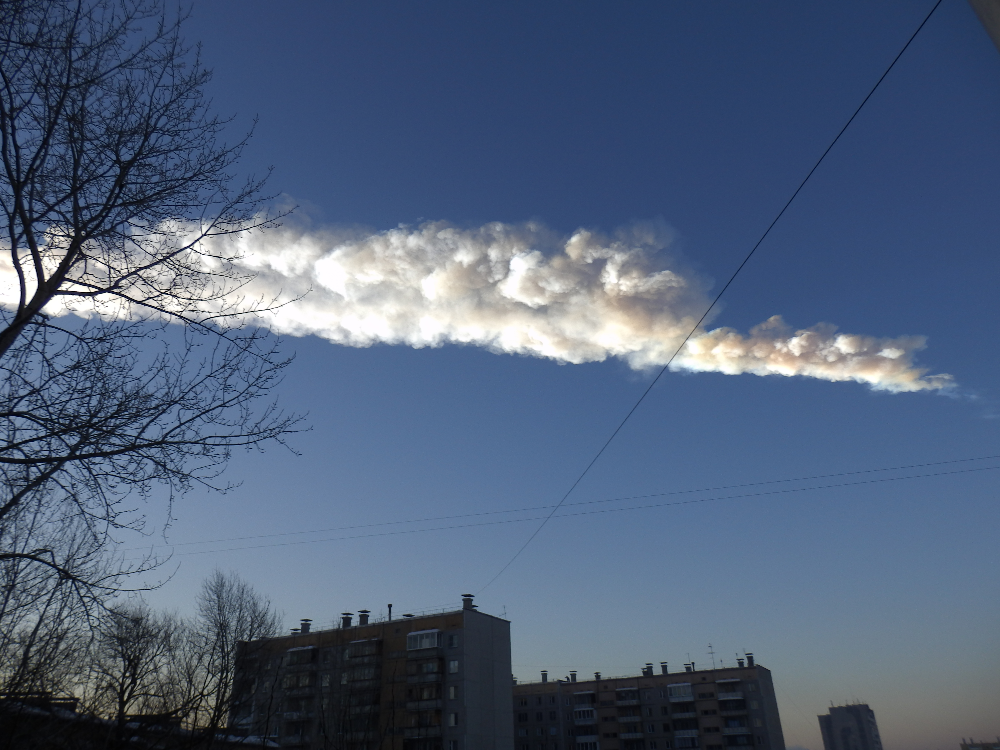

The Earth impact hazard is the risk posed by near-Earth objects (NEOs) — asteroids and comets whose orbits bring them close to Earth's path — striking the planet and causing local to global-scale damage. While large impacts are rare on human timescales, they are statistically inevitable on geological ones, and constitute a uniquely preventable natural catastrophe because detection and deflection are both technically feasible.
A near-Earth object (NEO) is any small Solar System body with a perihelion distance less than 1.3 AU. As of December 2024, 37,378 NEOs had been discovered, of which 37,255 are near-Earth asteroids (NEAs) and 123 are comets. Of these, 2,465 qualify as potentially hazardous asteroids (PHAs) — NEAs with a diameter greater than approximately 140 m and an orbit passing within 0.05 AU of Earth's orbit.

Alex Alishevskikh / CC BY-SA 3.0
{kind=link}
Impact Frequency by Size
Statistical models predict that stony asteroids of about 4 m in diameter strike Earth roughly once per year; objects around 20 m in diameter arrive every few decades, releasing energy comparable to the 2013 Chelyabinsk event. Objects of 50–60 m (Tunguska scale) arrive every few hundred to a few thousand years, releasing 10–30 megatonnes of TNT. Kilometre-scale impactors arrive roughly every 440,000 years and would cause global effects; impactors of 10 km or more — such as the body that produced the asteroid impact at Chicxulub 66 million years ago — arrive tens of millions of years apart and can trigger mass extinctions.
Notable Historical Events
Chicxulub (66 million years ago). The most consequential impact in the geological record struck what is now the Yucatán Peninsula of Mexico approximately 66 million years ago. The impactor was roughly 10 km in diameter and released an estimated 72 teratonnes of TNT, producing a crater 180–200 km across now buried ~1 km beneath younger sediments. The event triggered the Cretaceous–Palaeogene mass extinction, killing approximately 75% of all species on Earth including all non-avian dinosaurs.
Tunguska (1908). On 30 June 1908, a stony asteroid estimated at 50–60 m in diameter exploded as an air burst at 5–10 km altitude above the Podkamennaya Tunguska River in Siberia, releasing 10–30 megatonnes of TNT and flattening approximately 2,150 km2 of forest. Casualties were essentially zero due to the extreme remoteness of the region. Tunguska remains the largest impact event in recorded history.
Chelyabinsk (2013). On 15 February 2013, an 18-metre asteroid entered Earth's atmosphere at approximately 19.2 km/s and exploded at ~30 km altitude above Chelyabinsk Oblast, Russia. The blast released 400–500 kilotonnes of TNT, injured 1,491 people, and damaged over 7,200 buildings across six cities. The object arrived from the direction of the Sun and was not detected in advance, illustrating the particular challenge posed by small, Sun-approaching asteroids.
Risk Assessment Scales
The Torino scale, developed by Richard P. Binzel (MIT) and formally adopted in Turin in June 1999, categorises impact hazard from a specific NEO on an integer scale from 0 (no hazard) to 10 (certain global catastrophe). The highest rating ever assigned was 4, given briefly to asteroid 99942 Apophis in December 2004 when an initial 2.7% impact probability was calculated for 2029; subsequent observations eliminated that risk entirely. The Palermo scale is a logarithmic technical tool that compares impact probability to the background rate from similarly energetic objects; a value above 0 indicates the object poses a hazard exceeding normal background risk.
Planetary Defence
Multiple techniques have been proposed to deflect threatening NEOs. All viable approaches aim to deflect rather than destroy the object, since fragmentation would still produce destructive debris. The kinetic impactor method — striking the asteroid with a spacecraft at high velocity to alter its orbit — was successfully demonstrated by NASA's DART mission, which impacted Dimorphos (the moonlet of binary asteroid Didymos) on 26 September 2022. Dimorphos's orbital period was shortened by 32 minutes — more than 25 times NASA's minimum success threshold. The gravity tractor method, proposed by Edward T. Lu and Stanley G. Love, stations a spacecraft near the asteroid and uses gravitational attraction to slowly alter its course over years. Nuclear detonation offers 10–100 times more energy than non-nuclear alternatives for larger threats.
The Spaceguard Survey — a term coined by Arthur C. Clarke and later adopted for real-world programmes — drives systematic NEO discovery. A 1992 Congressional mandate directed NASA to discover 90% of NEAs larger than 1 km within 10 years; that goal was achieved by 2011. Surveys including the Catalina Sky Survey, Pan-STARRS, and ATLAS continue cataloguing smaller objects. The forthcoming NEO Surveyor space telescope (planned launch ~2027) is projected to identify 76% of NEOs larger than 140 m. Internationally, the International Asteroid Warning Network (IAWN), established in 2013, coordinates shared observational data and response frameworks under the oversight of the United Nations.